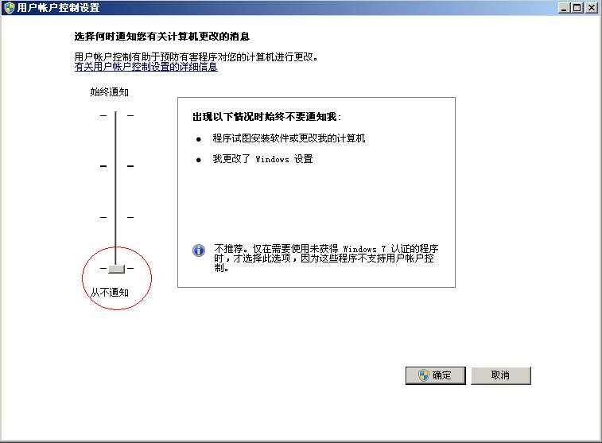

0x80040154:
部分精简GHOST系统有。原因是把系统DLL给精简掉导致的。
解决办法 开始->运行->Regsvr32 atl.dll 即可
0x8002801c或者0x80020009:
系统没有关闭UAC. 主要在win7 win8 vista 2008系统出现.
解决办法,手动关闭UAC或者regsvr32用管理员权限启动,或者调用RegDll的进程必须有管理员权限.
手动关闭UAC的方法
控制面版-用户帐号-更改用户帐户控制设置. 如图
